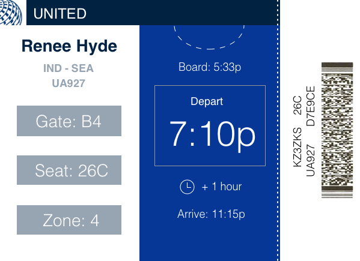

Focus: Design Strategy
Boarding pass design is something that has been discussed many times around the internet, for example, here and here. To summarize some of the problems that come up:
Here’s my shot at a redesign.
Hierarchy was important in this design. There is a lot of information, but the most important bits need to stand out. Breaking information into columns helps draw the eye to the type of information that’s needed at that moment. Information directed at attendants placed sideways so that passengers can disregard it more easily.
The size of this boarding pass is the width of a passport. The blue strip at the top would stick out as a “bookmark”. The white dotted line could be punched so that the pass hooks onto the photo page of the passport:
I tried out this design by punching tabs into old boarding passes and seeing how well they would stay attached to my passport. It seemed to hold in place just fine since the paper is so thick. However, a boarding pass is an item that you definitely don’t want to rip. I made sure there was nothing important above the tab, so that if the tab rips, it’s not the end of the world. However, more testing would be useful in making this a more reliable feature.